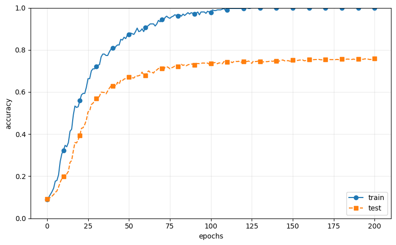
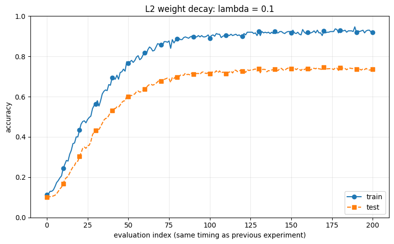
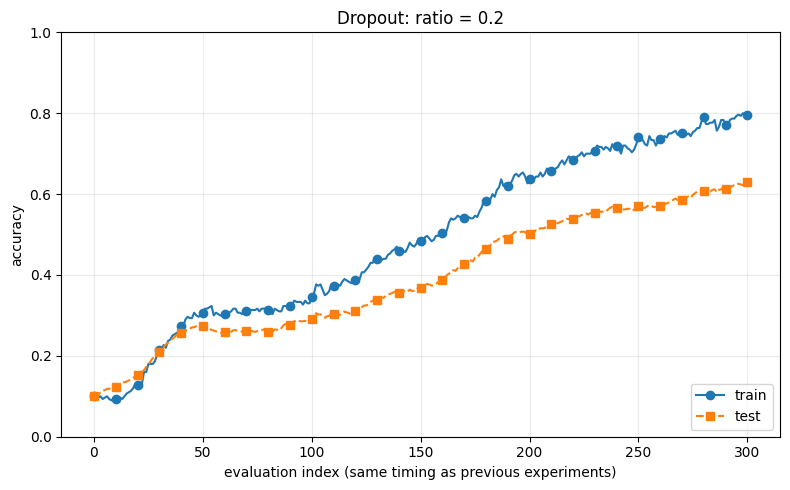

CHAPTER 06 / LEARNING TECHNIQUES
让网络学得更顺利。
第六章已完成。从参数更新、初始化，到正则化与超参数验证，沿着自己的代码回顾。
本章学习回顾
| 小节 | 学习与实践 | 回查入口 |
|---|---|---|
| 6.1 参数更新 | 已写4个优化器；Adam以会使用为目标 | Adam公式与代码 |
| 6.2 初始化 | 已运行激活值前向实验，讨论Xavier与He | 逐行注释与读图 |
| 6.3 BatchNorm | 已读算法与对比图，自己的网络未加入BN | BN公式及实验比较 |
| 6.4.1 过拟合 | 基础网络与300样本实验已运行 | 训练/测试差距 |
| 6.4.2 权值衰减 | L2子类与实验已运行 | 惩罚、梯度与曲线 |
| 6.4.3 Dropout | Dropout子类与实验已运行 | mask与评价模式 |
| 6.5 超参数验证 | 已阅读，本节按自己的安排不敲代码 | 验证集与随机搜索 |
| 6.6 小结 | 回顾本章学习技巧 | 全章主线 |
基础MultiLayerNet使用ReLU、He初始化与one-hot标签；L2和Dropout扩展位于Notebook中。
把本章连成一条线
| 遇到的问题 | 本章的方法 |
|---|---|
| 算出梯度后怎样更新参数？ | SGD、Momentum、AdaGrad、Adam |
| 怎样让初始信号传到深层？ | Xavier、He等合适的初始化 |
| 怎样调整中间数据的分布？ | Batch Normalization |
| 怎样限制对训练数据的过度拟合？ | 权值衰减、Dropout |
| 怎样选择学习率等配置？ | 验证集、随机搜索与逐步缩小范围 |
BN在mini-batch上对同一特征进行标准化，再通过可学习的γ、β缩放和平移。它帮助降低对初始化尺度的敏感性；与输入图片除以255的预处理区分开来。公式见本章完整笔记。
6.4.1 · 从曲线看过拟合

网络含6个100神经元隐藏层与一个10分类输出层，使用He初始化、SGD学习率0.01。后半段训练表现继续提高，测试表现趋平，两者出现明显差距。过拟合不要求test曲线一定下降。
每3次更新评价一次，第一点在第一次更新后；201个评价点共601次更新。图横轴沿用原实验的评价编号。
6.4.2 · 权值衰减
总损失为交叉熵加上所有W元素平方和的λ/2倍。λ控制惩罚强度，本次只惩罚W，b保留原来的梯度。
# 损失：逐层累加惩罚
weight_decay += 0.5 * self.weight_decay_lambda * np.sum(W ** 2)
# 梯度：补上正则项的导数
grads[key] = grads[key] + self.weight_decay_lambda * self.params[key]super().loss调用父类原来的损失计算；新的loss再加惩罚。求梯度与更新仍是分开的两步。

与无正则化图相比，训练/测试差距缩小，但本次test没有提高。train从100%下降到92%本身不能证明效果变好，要同时看两条线的差距和test表现。
6.4.3 · Dropout
在隐藏层ReLU后插入Dropout。训练前向重新抽取mask，反向复用同一张mask；评价时关闭随机屏蔽，按教材版本乘以保留比例。
# 训练前向
self.mask = np.random.rand(*x.shape) > self.dropout_ratio
out = x * self.mask
# 反向
dx = dout * self.mask
# 评价前向
out = x * (1.0 - self.dropout_ratio)屏蔽的是本轮的部分输出位置，数组形状与权重保留。训练集准确率和测试集准确率都在评价模式下计算。

这次曲线末段仍在上升，没有得到比前两组更高的测试准确率。各组初始化与训练时长不同，读图时结合实际配置，不把正则化理解为必然提高准确率。
6.5 · 超参数验证与最优化
本节已阅读，按你的安排不实际敲代码。W、b通过梯度学习；学习率、batch大小、层宽、λ和Dropout比例等超参数由实验配置与验证结果决定。
| 数据 | 分工 |
|---|---|
| 训练集 | 计算梯度，学习参数 |
| 验证集 | 比较超参数，选择配置 |
| 测试集 | 配置确定后评价最终泛化表现 |
教材先同步打乱训练图片与标签，再分出20%作验证数据。正式调参用验证集选择配置；反复按测试结果调整配置，会失去独立评价的作用。
学习率、λ跨多个数量级，教材按对数尺度采样：先均匀抽取指数，再取10的幂。图6-24实线是验证准确率，虚线是训练准确率；Best-1等按验证表现排序。最高train不是选择最佳超参数的标准。
接下来 · 卷积神经网络
从第7章7.1整体结构继续，先比较全连接网络与CNN的层顺序，再看卷积层和池化层。已有笔记、代码和短练习按需回查。